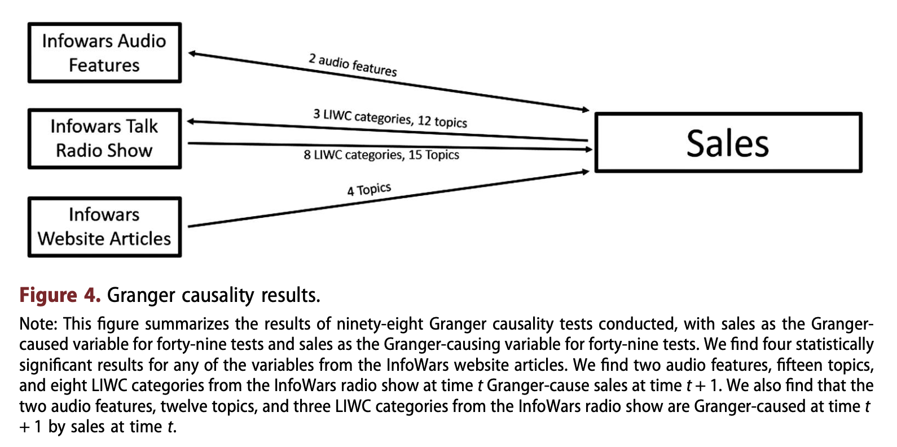
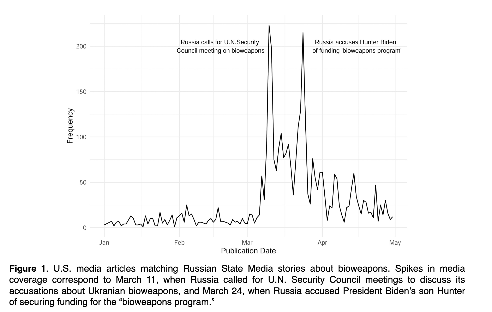
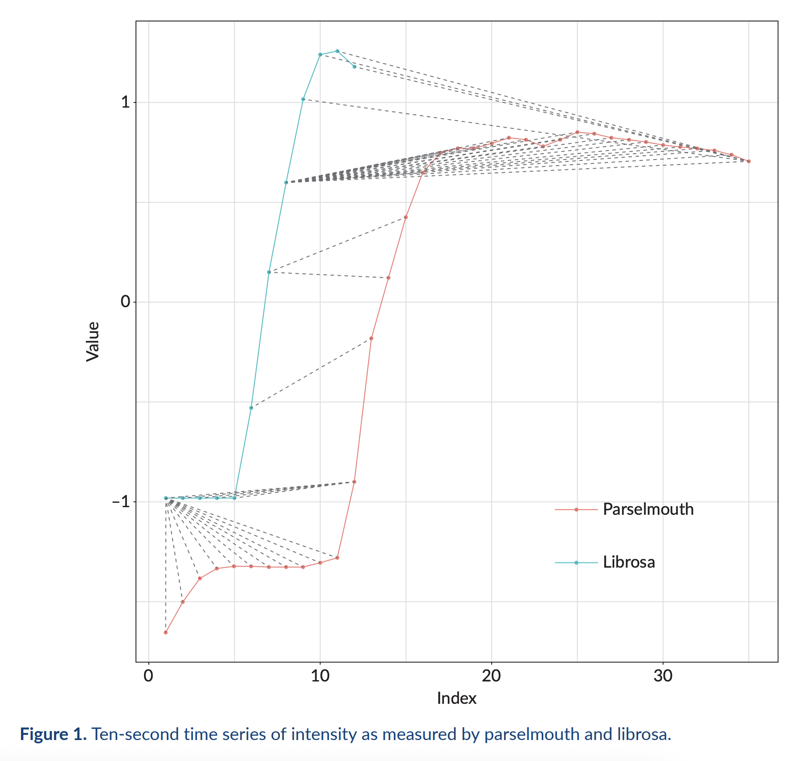
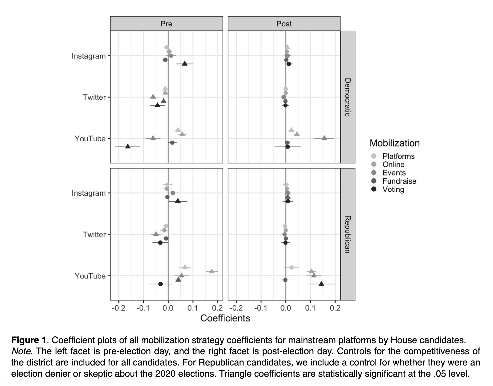
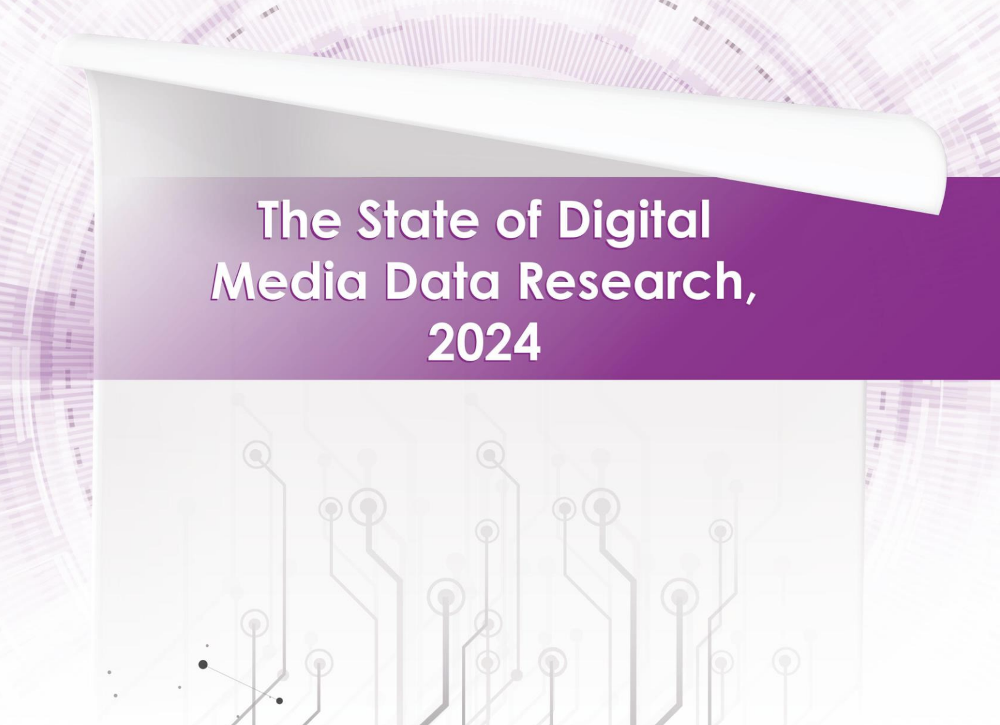

Publications

What’s Political on TikTok? Perceptions, Prevalence, and Patterns of Exposure to TikToks Users Perceive as Political
Jason Greenfield, Stephanie T. Wang, Samuel Jung, Sanjana Gautam, Kevin Yang, Danaé Metaxa
International AAAI Conference on Web and Social Media (ICWSM), 2026

Style and substance on The Alex Jones Show predict InfoWars sales: a multi-modal analysis of a media empire
Ross Dahlke ,Yunkang Yang, Josephine Lukito, Jason Greenfield, Bin Chen, Megan A. Brown, and Rebecca Lewis
Information, Communication & Society, 2026

Quantifying Narrative Similarity Across Languages
Hannah Waight, Solomon Messing, Anton Shirikov, Margaret E. Roberts, Jonathan Nagler, Jason Greenfield, Megan A. Brown, Kevin Aslett, Joshua A. Tucker
Sociological Methods & Research, 2025

Audio-as-Data Tools: Replicating Computational Data Processing
Josephine Lukito, Jason Greenfield, Yunkang Yang, Ross Dahlke, Megan A. Brown, Rebecca Lewis, Bin Chen
Media and Communication, 2024

Candidates Be Posting: Multi-Platform Strategies and Partisan Preferences in the 2022 US Midterm Elections
Josephine Lukito, Maggie Macdonald, Bin Chen, Megan A. Brown, Stephen Prochaska, Yunkang Yang, Jason Greenfield, Jiyoun Suk, Wei Zhong, Ross Dahlke, Porismita Borah
Social Media + Society, 2025

The State of Digital Media Data Research, 2024
Megan A. Brown, Josephine Lukito, Jason Greenfield, Bin Chen, Sarah Graham, Sarah Shugars, Meredith L. Pruden